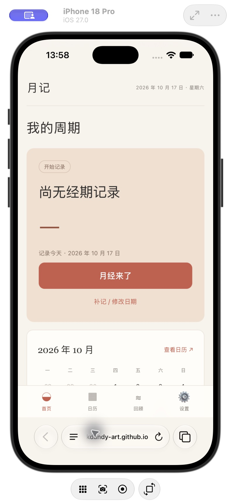
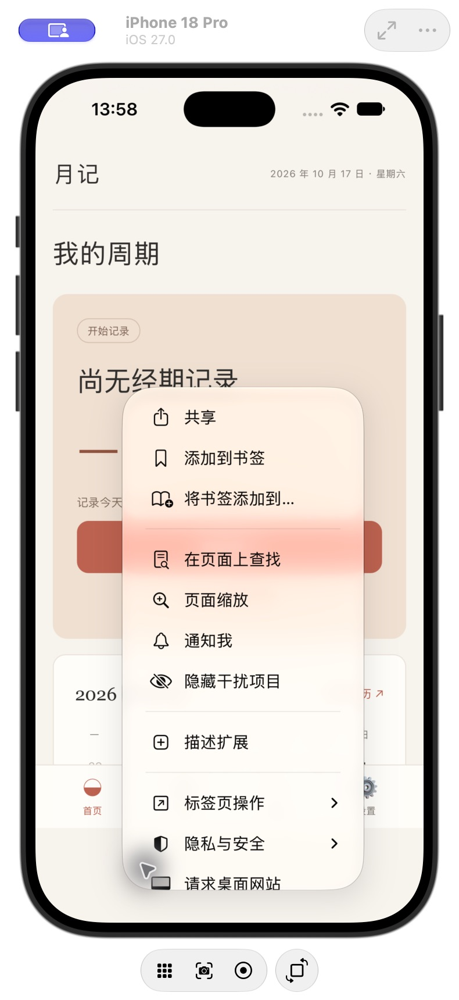
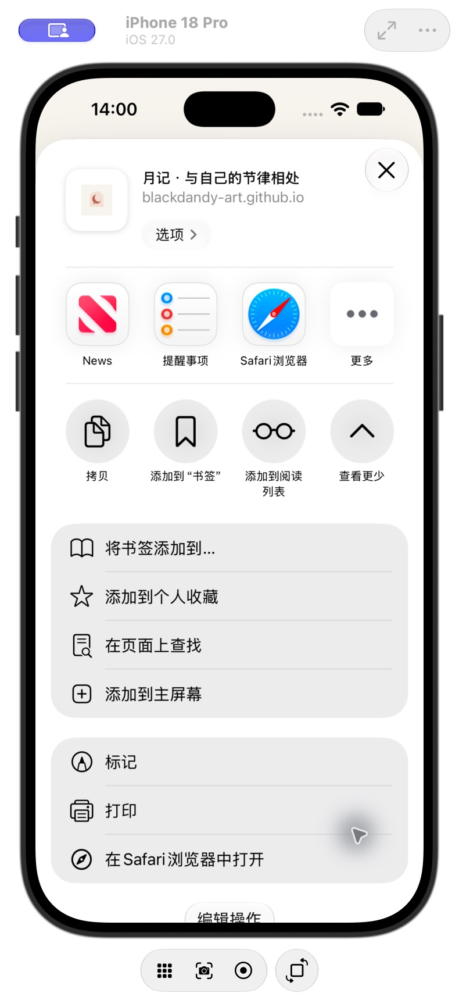

月记支持经期与每日感受记录。网页应用已可使用；原生版正在准备发布，尚未在 App Store 上架。
首页点击“月经来了”即可记录今天开始；进行中点击“月经结束了”即可记录今天结束，误触可点击“撤销”。补记、调整起止日期或填写具体时间，可点“补记 / 修改日期”或“修改这次记录”。日历的经期入口使用所选日期；过去未记录且已有后续经期时，会先打开日期编辑以避免重叠。其他记录点击对应小按钮。日历中选择今天或过去的日期，可补记或修改；未来日期可添加计划。心情和症状支持多选，房事、饮食、睡眠与便便支持同日多条记录。
首页查看简短反馈，在“回顾”中选择近30天或90天，查看心情、反复身体感受、睡眠，以及同日症状组合的可能原因、日常建议和就医提醒。“记录依据与来源”可展开查看日期和NHS参考资料（英文）。只统计你实际填写的日期，未记录不代表没有症状。AI辅助整理的健康信息由本机规则匹配，不具备医疗功能，不能用于诊断、治疗或替代就医。可能原因不是确诊，列表不完整，同日填写也不一定同时发作；未匹配到组合不能排除疾病。不会分析日记文字、照片或房事细节。
在系统 Safari 地址栏打开月记网址。紧凑布局先轻点底部网址展开工具栏，点地址栏左侧的横线图标（页面菜单），再点菜单顶部“共享”；其他布局可直接点共享按钮。在面板中点“查看更多”（如有），向下滚动找到“添加到主屏幕”。若没有该选项，到列表底部“编辑操作”添加。打开“作为网页 App 打开”，再点“添加”。苹果官方步骤。
添加前先在当前月记入口导出 JSON 备份。Safari 与主屏幕版可能使用独立的本地存储；若新图标打开后没有旧记录，可在新入口导入备份，确认记录完整后固定使用同一入口。原入口记录保留。也可以在 Safari 中加入个人收藏，继续直接使用网页版。
① 地址栏左侧横线图标为页面菜单。

② 打开菜单后，顶部第一项为共享。

③ 共享面板点查看更多后，出现添加到主屏幕。

原设备打开设置并导出 JSON 备份，在新设备导入。新版兼容月记的 v1、v2、v3 备份。更新不清空记录；旧数据首次保存为新格式前，本机自动保留更新前原始备份，设置中可导出。旧版程序无法读取 v3 时请使用新版或导出原始备份，勿清空。确认导入会替换当前记录，建议先保存当前设备的备份。数据不会自动在 Mac、iPhone 和网页之间同步。
网页版设置 → Mac 加密备份 → 连接并生成用户 ID。首次生成并保存恢复文件，再重新选择该文件、勾选同意并开启备份。记录先保存在手机，本地保存约 3 秒后自动上传密文到维护者的 MacBook，每人使用独立 ID 和文件夹；管理员不能解密。恢复文件请自行保管，勿发给管理员。
Mac 必须开机联网且服务可达。睡眠、合盖进入睡眠、关机或断网时，显示待备份；手机本地记录保留，重新连接后自动重试。关闭网页期间不能保证继续上传，请在关页前确认备份完成。临时 HTTPS 转发入口仅用于内测。地址变化后，后台会核对 Mac 签名并更新连接配置，可能有数分钟延迟；重新打开网页后会重试，不能保证长期可用。
更换设备或清理浏览器前先导出 JSON 备份。新设备可在同一网址选择“用恢复文件找回原 ID”，再点击“从 Mac 恢复”；恢复前会导出当前本地记录，不自动合并。恢复文件丢失且本机记录已丢失时，管理员也无法解密。旧用户原记录和原网址不变，未主动开启不会上传。
原生版在计划中设置提醒，再在设置中开启本地提醒。系统通知权限关闭时，可到系统设置中调整。应用安排未来 180 天内最近 50 项提醒，打开应用时更新。开启设备认证锁后，应用离开前台时锁定；认证由系统处理。网页版提供日历文件导出，不具有原生版的系统通知与设备认证功能。
先确认是否处于演示模式，以及是否使用原来的浏览器、网址或应用。演示模式不会覆盖真实记录。清理浏览器数据、删除原生应用或更换设备可能导致本地记录丢失，只能从你此前保存的备份恢复。读取损坏的原生备份时，应用会保留原文件，并提供导出原始备份。
提交问题或功能建议。请注明网页/原生版本、系统版本与复现步骤。反馈公开可见，请勿附健康记录、备份文件或私人信息。正式发布前将补充私人支持渠道。
预计日期仅供参考，不能用于诊断或避孕。